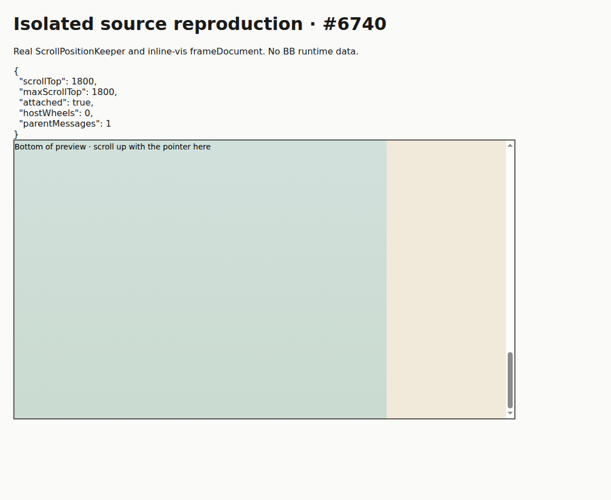
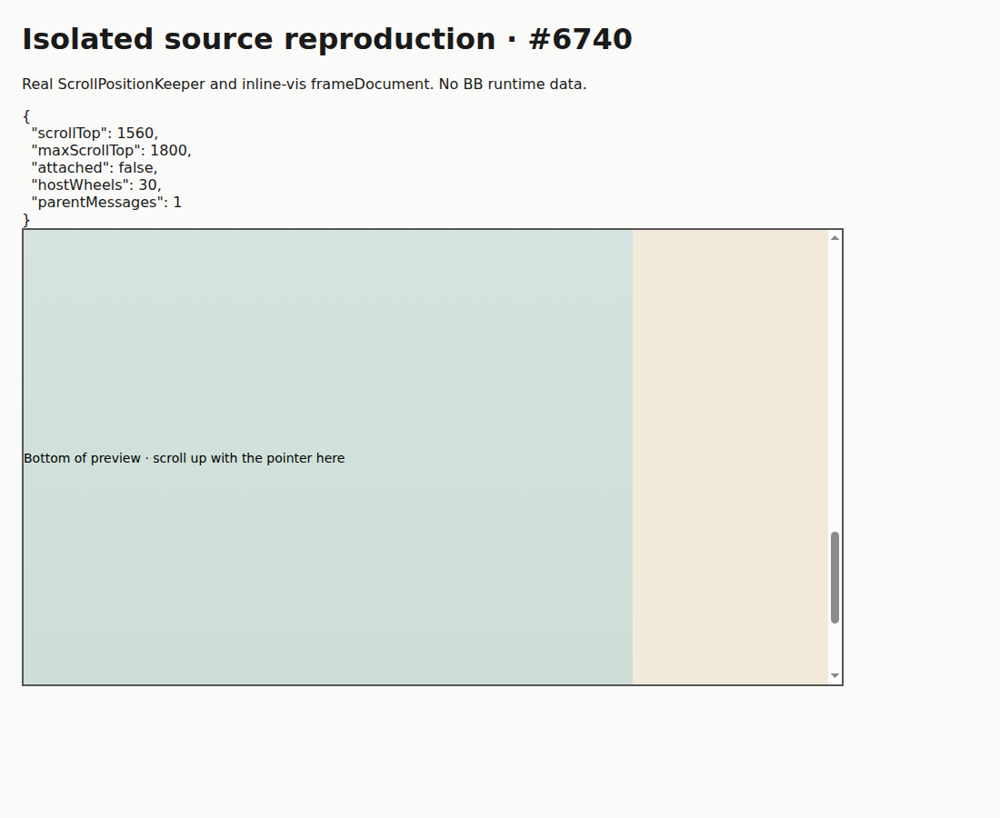

#6740 · Sandboxed preview input and bottom anchoring
Verdict: REPRODUCED · Root-cause confidence: high
1. TL;DR
Upward wheel input inside a sandboxed visualization can move the containing timeline through browser scroll chaining, but the bottom-position keeper immediately restores its position. The parent timeline receives no wheel event from the frame document, so the keeper has no active input session and classifies the movement as an unexplained displacement. Moving the pointer to host text makes identical input work. Two clean source checkouts and two fresh browser profiles reproduced this difference with the real keeper and inline-vis document generator. The screenshots show a small isolated source harness, not a full BB thread or a production session.
2. Claims vs findings
| Claim tested | Finding | Evidence |
|---|---|---|
| Small upward steps over a preview fail while bottom-attached. | Verified | Thirty −8px steps leave scrollTop at 1800; the parent observes zero wheel events. |
| The same gesture over adjacent host text scrolls normally. | Verified | scrollTop becomes 1560; the parent observes 30 wheel events and the keeper detaches. |
| The keeper, rather than disabled browser scroll chaining, causes the rejection. | Verified | Disconnecting the keeper makes the identical iframe gesture move scrollTop from 1800 to 1560 without a parent wheel event. |
| A larger wheel step sometimes escapes because of a bottom threshold. | Unverified | The reproduction deliberately uses repeated small steps. Source uses a 4px threshold, but the no-input branch rejects unexplained movement while attached regardless of gesture size. No claim that changing the threshold fixes this bug is supported. |
| Specific released-version and physical trackpad behavior. | Unverified | Tested trusted current main and Chromium wheel automation, not a release binary or physical hardware. |
3. Environment
- Public repository get-bb/bb; source fetched directly from its main branch. The initial checkout's origin uses an older repository name; its HEAD matched the canonical main SHA above.
- Linux x86_64; Node 22.19.0; pnpm 9.15.0; Vitest 4.1.1; Chromium user agent recorded in the appendix.
- No providers, accounts, BB database, runtime store, or live user sessions were used. Browser sessions were plugin-owned local headless profiles.
- The source harness was loaded into fresh about:blank pages. A preliminary local static server used port 48740; it was not used by either successful automated reproduction because browser and source-build hosts differ. No application service ports or application data directory were needed.
- Frozen installs completed in two temporary detached worktrees. The normal build initially hit an unbuilt SDK artifact; building @get-bb/plugin-sdk through Turbo and retrying the normal build completed all 72 tasks.
4. Minimal reproduction
- Clone the public repository and detach at the trusted SHA. Run
pnpm install --frozen-lockfile --prefer-offline. - Save the harness.ts and serve.mjs source printed below into
/tmp/bb-6740-repro/. The harness imports real source modules and uses the production sandbox flags and 4px bottom threshold. - Bundle and serve using the commands below, adjusting the temporary path and choosing an unused explicit port.
- Open the page in Chromium. The scrollTop readout starts at 1800. Scroll upward over the wide frame: the readout stays at 1800. Scroll over the narrow host text column: it decreases.
- For repeatable wheel automation, save browser-test.js printed below. Prepend
const sourceBundle = <JSON-encoded bundle.js text>;and run it with the BB Browser Automation plugin's headless session. It executes the frame case, host-text control, and disconnected-keeper control, then fails on the missing upward movement.
git clone --branch main https://github.com/get-bb/bb.git bb-6740 cd bb-6740 git switch --detach 32cec974c6a9bf48bf1902495b58792a8cc1848f pnpm install --frozen-lockfile --prefer-offline mkdir -p /tmp/bb-6740-web node_modules/.bin/esbuild /tmp/bb-6740-repro/harness.ts --bundle \ --alias:@="$PWD/apps/app/src" \ --alias:inline-vis-frame="$PWD/plugins/inline-vis/frame.ts" \ --outfile=/tmp/bb-6740-web/bundle.js node /tmp/bb-6740-repro/serve.mjs /tmp/bb-6740-web 48740
Expected: 30 upward 8px steps move the timeline upward for either pointer position. Actual, first clean run:
BEFORE {"scrollTop":1800,"maxScrollTop":1800,"attached":true,"hostWheels":0,"parentMessages":1}
IFRAME {"scrollTop":1800,"maxScrollTop":1800,"attached":true,"hostWheels":0,"parentMessages":1}
TEXT {"scrollTop":1560,"maxScrollTop":1800,"attached":false,"hostWheels":30,"parentMessages":1}
DISCONNECTED {"scrollTop":1560,"maxScrollTop":1800,"attached":true,"hostWheels":0,"parentMessages":1}
Error: REGRESSION: upward wheel input over the sandboxed preview does not move the timeline
The regression fails against unchanged production source. Both controls pass, ruling out a broken scroll container or unsupported browser scroll chaining.



Automated regression source
const page = await browser.getPage("main");
await page.setViewport({ width: 1100, height: 900 });
await page.goto("about:blank");
await page.evaluate(sourceBundle);
await new Promise((resolve) => setTimeout(resolve, 600));
const before = await page.evaluate(() => window.repro.state());
console.log("BEFORE", JSON.stringify(before));
const framePoint = await page.$eval("iframe", (element) => {
const rect = element.getBoundingClientRect();
return { x: rect.left + 300, y: Math.min(rect.bottom - 100, 650) };
});
await page.mouse.move(framePoint.x, framePoint.y);
for (let step = 0; step < 30; step++) {
await page.mouse.wheel({ deltaY: -8 });
await new Promise((resolve) => setTimeout(resolve, 35));
}
await new Promise((resolve) => setTimeout(resolve, 250));
const iframeResult = await page.evaluate(() => window.repro.state());
console.log("IFRAME", JSON.stringify(iframeResult));
const textPoint = await page.$eval("#text", (element) => {
const rect = element.getBoundingClientRect();
return { x: rect.left + 50, y: Math.min(rect.bottom - 100, 650) };
});
await page.mouse.move(textPoint.x, textPoint.y);
for (let step = 0; step < 30; step++) {
await page.mouse.wheel({ deltaY: -8 });
await new Promise((resolve) => setTimeout(resolve, 35));
}
await new Promise((resolve) => setTimeout(resolve, 250));
const textResult = await page.evaluate(() => window.repro.state());
console.log("TEXT", JSON.stringify(textResult));
await page.goto("about:blank");
await page.evaluate(sourceBundle);
await new Promise((resolve) => setTimeout(resolve, 600));
await page.evaluate(() => window.repro.disconnect());
await page.mouse.move(framePoint.x, framePoint.y);
for (let step = 0; step < 30; step++) {
await page.mouse.wheel({ deltaY: -8 });
await new Promise((resolve) => setTimeout(resolve, 35));
}
await new Promise((resolve) => setTimeout(resolve, 250));
const disconnected = await page.evaluate(() => window.repro.state());
console.log("DISCONNECTED", JSON.stringify(disconnected));
if (textResult.scrollTop >= before.scrollTop || disconnected.scrollTop >= before.scrollTop) {
throw new Error("Control failed: browser scroll chaining must work without the keeper");
}
if (iframeResult.scrollTop >= before.scrollTop) {
throw new Error("REGRESSION: upward wheel input over the sandboxed preview does not move the timeline");
}
Harness source
import { ScrollPositionKeeper } from "@/components/ui/scroll-position-keeper";
import { frameDocument } from "inline-vis-frame";
document.body.innerHTML = `
<style>
body { margin: 24px; font: 16px system-ui; background: #fafaf8; color: #1a1a1a; }
#timeline { height: 500px; width: 900px; overflow: auto; border: 2px solid #555; }
[data-timeline-row-id] { height: 500px; background: #e4e9ee; }
#last { height: 1800px; display: flex; background: white; }
iframe { width: 680px; height: 1800px; border: 0; }
#text { width: 190px; padding: 14px; background: #f1eada; }
#status { white-space: pre; }
</style>
<h1>Isolated source reproduction · #6740</h1>
<p>Real ScrollPositionKeeper and inline-vis frameDocument. No BB runtime data.</p>
<div id="status"></div>
<div id="timeline"><div id="content">
<section data-timeline-row-id="first">Earlier message</section>
<section data-timeline-row-id="last" id="last"><iframe title="Source inline-vis frame" sandbox="allow-scripts allow-forms"></iframe><div id="text">Host text column · scroll here for the control</div></section>
</div></div>`;
const timeline = document.querySelector<HTMLElement>("#timeline")!;
const content = document.querySelector<HTMLElement>("#content")!;
const frame = document.querySelector<HTMLIFrameElement>("iframe")!;
frame.srcdoc = frameDocument(
'<main style="height:1800px;background:linear-gradient(#e5eef8,#cadbd0)"><h2>Sandboxed preview</h2><p>Wheel inside this area does not bubble to the parent document.</p><div style="padding-top:1200px">Bottom of preview · scroll up with the pointer here</div></main>',
{ theme: { appearance: "light", variables: {} }, baseHref: location.href },
);
let hostWheels = 0;
let parentMessages = 0;
timeline.addEventListener("wheel", () => hostWheels++);
window.addEventListener("message", (event) => {
if (event.source === frame.contentWindow) parentMessages++;
});
const keeper = new ScrollPositionKeeper({
bottomThresholdPx: 4,
deferWritesWhileScrolling: false,
getContentElement: () => content,
getFloorElement: () => null,
getFooterElement: () => null,
getScrollElement: () => timeline,
getTopLevelRows: () => content.children as HTMLCollectionOf<HTMLElement>,
initiallyAttached: true,
});
const disconnect = keeper.connect(timeline);
const state = () => ({
scrollTop: timeline.scrollTop,
maxScrollTop: timeline.scrollHeight - timeline.clientHeight,
attached: keeper.isAttached(),
hostWheels,
parentMessages,
});
Object.assign(window, { repro: { state, disconnect, keeper } });
setInterval(() => {
document.querySelector("#status")!.textContent = JSON.stringify(state(), null, 2);
}, 50);
Static server source
import { createServer } from "node:http";
import { readFileSync } from "node:fs";
const [directory, portText] = process.argv.slice(2);
const port = Number(portText);
if (!directory || !Number.isInteger(port) || port < 40000 || port > 60000) {
throw new Error("Supply a temporary bundle directory and a port in 40000–60000");
}
const bundle = readFileSync(`${directory}/bundle.js`);
createServer((request, response) => {
if (request.url === "/bundle.js") {
response.setHeader("Content-Type", "text/javascript");
response.end(bundle);
return;
}
response.setHeader("Content-Type", "text/html");
response.end('<!doctype html><meta charset="utf-8"><title>Source reproduction 6740</title><script type="module" src="/bundle.js"></script>');
}).listen(port, "127.0.0.1", () => console.log(`Listening on ${port}`));
5. Root cause
The keeper's wheel listener extends the input session, and it is attached to the host scroll element. The browser does not bubble wheel events from a child frame document into that parent document. The zero parent-wheel count, together with successful scrolling when the keeper is disconnected, demonstrates this transport gap directly.
handleScroll checks for input and reapplies the held position when none is recognized:
if (!this.isInputSession()) {
...
if (extentChanged || this.isFloorStale() || !this.followsUnexplainedScroll()) {
this.syncFloor();
this.ownScrollTop = scrollTop;
this.apply(scrollElement, true);
return;
}
}
followsUnexplainedScroll is false when bottom-attached unless window-find is open. Consequently browser-chained movement is restored to the bottom instead of becoming a user reading position. This is not an iframe height oscillation: layout and maximum scrollTop remain constant in both runs.
The real frame bootstrap communicates theme, links, and size, not wheel activity. The host handler validates the sending contentWindow and recognizes only height and link requests. No existing frame-input attribution path closes the gap.
6. Proposed fix and automation limit
Preserve the keeper's distinction between input and layout correction, but provide a reviewed way to attribute iframe-originated gestures to the owning timeline. An explicit, source-validated, bounded activity signal is one candidate; any implementation must account for ordering versus the native chained scroll, internally scrollable frames, malicious activity messages, and layout changes while a pointer merely hovers over a frame. Parent-pointer presence alone is insufficient proof of a user gesture.
No automatic fix or pull request: the straightforward solution introduces sandbox-originated input into the host's scroll-input policy. That crosses the existing frame/host trust boundary and requires a decision about input attribution; it does not satisfy the caller's simple-fix restrictions. No production source was modified or pushed. No open pull request was linked in the issue timeline or found by the numeric issue search at investigation time.
7. Verification
The same agent repeated the test in a second temporary detached checkout, named verify, at the exact trusted SHA. Its tracked and untracked status was clean before the reproduction. Dependencies were installed independently with the frozen lockfile, and esbuild resolved both imported modules from that second checkout. A second plugin-owned headless session supplied a fresh Chrome profile and fresh page state. This is a clean repeat by the same agent, not independent verification.
BEFORE {"scrollTop":1800,"maxScrollTop":1800,"attached":true,"hostWheels":0,"parentMessages":1}
IFRAME {"scrollTop":1800,"maxScrollTop":1800,"attached":true,"hostWheels":0,"parentMessages":1}
TEXT {"scrollTop":1560,"maxScrollTop":1800,"attached":false,"hostWheels":30,"parentMessages":1}
DISCONNECTED {"scrollTop":1560,"maxScrollTop":1800,"attached":true,"hostWheels":0,"parentMessages":1}
Error: REGRESSION: upward wheel input over the sandboxed preview does not move the timeline
The second run supports the same verdict and mechanism; no correction was needed. Bundle hashes differ because esbuild embeds the checkout path in source labels, not because production source differs.
Relevant existing tests pass on the trusted baseline: 56 tests across 2 files, including 200 randomized keeper sequences. They do not exercise browser event routing across an iframe.
pnpm exec turbo run test --filter=@bb/app -- \ src/components/ui/scroll-position-keeper.test.ts \ src/components/ui/scroll-position-keeper.model.test.ts Test Files 2 passed (2) Tests 56 passed (56)
8. Related issues and history
No duplicate was established. Trusted source history includes #6517 (touch-target lifetime), #6488 (layout stability), and #6437 (keeper regressions). These are contextual history, not reviewed linked fixes for this issue.
9. Appendix and evidence
Both raw reproduction results are printed in sections 4 and 7. Build, tests, environment, and command ledger:
Trusted source: get-bb/bb main, 32cec974c6a9bf48bf1902495b58792a8cc1848f Source build environment: Linux x86_64; Node v22.19.0; pnpm 9.15.0 Browser: Mozilla/5.0 (X11; Linux x86_64) AppleWebKit/537.36 (KHTML, like Gecko) HeadlessChrome/149.0.0.0 Safari/537.36 Browser sessions: two separate local headless profiles, no existing tabs or user runtime data. Application data directory: none. Provider turns: none. Source preparation, first checkout: git fetch https://github.com/get-bb/bb.git main git worktree add --detach "$BASE" 32cec974c6a9bf48bf1902495b58792a8cc1848f pnpm install --frozen-lockfile --prefer-offline pnpm exec turbo run build Initial build: failed because plugin SDK dist/process.js and dist/host.js were not built. pnpm exec turbo run build --filter=@get-bb/plugin-sdk pnpm exec turbo run build Final build: 72 successful tasks; exit 0. Source preparation, clean second checkout: git worktree add --detach "$VERIFY" 32cec974c6a9bf48bf1902495b58792a8cc1848f git status --short Result before reproduction: clean. pnpm install --frozen-lockfile --prefer-offline Result: exit 0, no dependency or lockfile changes. Each checkout supplied both source imports to its own esbuild invocation. The generated bundle was prepended as a JSON-encoded sourceBundle constant to browser-test.js. Browser Automation run used a fresh headless session for each checkout and timeout 30000ms. Both runs failed only at the regression assertion, after both scrolling controls passed. Relevant existing tests: pnpm exec turbo run test --filter=@bb/app -- src/components/ui/scroll-position-keeper.test.ts src/components/ui/scroll-position-keeper.model.test.ts 2 files passed; 56 tests passed; includes 200 randomized keeper sequences; exit 0. GitHub reads: repository visibility, valid issue properties/labels, issue comments, cross-reference metadata, recent inline-vis issues, and open PR numeric issue search. No issue comments or linked PRs were present at investigation time. No full application instance, mobile browser, release binary, or physical trackpad was tested. No production fix was attempted; the cross-frame input-policy decision is outside simple-fix limits.
Scope limits: a source-level browser harness verifies the actual keeper and frame generator, not a complete authenticated application, mobile Safari, physical hardware, or release 0.48.0. Issue suggestions were treated as untrusted claims, not executed as supplied code or instructions. All executed production source came from canonical public main; reproduction code was authored from repository evidence.